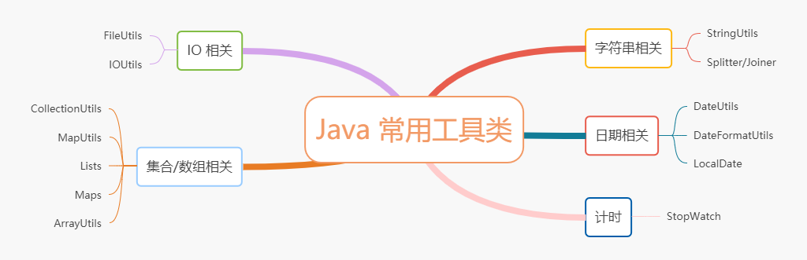

java常用工具库使用¶

字符串相关工具类¶
Java 中 String 应该是日常用的最多一个类吧，平常我们很多代码需要围绕 String ，做一些处理。
JDK 提供 String API 虽然比较多，但是功能比较基础，通常我们需要结合 String 多个方法才能完成一个业务功能。 下面介绍一下 Apache 提供的一个工具类 StringUtils. Maven Pom 信息如下：
<dependency>
<groupId>org.apache.commons</groupId>
<artifactId>commons-lang3</artifactId>
<version>3.10</version>
</dependency>
commons-lang 有两个版本，一个是 commons-lang3 ，一个是 commons-lang 。 commons-lang 是老版本，已经很久没有维护了。 commons-lang3 是一直在维护的版本，推荐直接使用这个版本。 注意：如果你系统已经有 commons-lang，注意如果直接替换成 commons-lang3，将会编译错误。commons-lang3 中相关类与 commons-lang 一样，但是包名不一样。
判断字符串是否为空¶
判断字符串是否为空，想必每个人应该都写过吧：
if (null == str || str.isEmpty()) {
}
虽然这段代码非常简单，但是说实话，以前还是在这里犯过空指针的异常的。
使用 StringUtils ，上面代码可以替换下面这样：
if (StringUtils.isEmpty(str)) {
}
StringUtils 内部还有一个方法 isBlank，也是用来判断字符串是否为空，两个方法比较相近，比较搞混，主要区别如下：
// 如果字符串都是空格的话，
StringUtils.isBlank(" ") = true;
StringUtils.isEmpty(" ") = false；
字符串固定长度¶
这个通常用于字符串需要固定长度的场景，比如需要固定长度字符串作为流水号，若流水号长度不足，，左边补 0 。 这里当然可以使用 String#format 方法，不过阿粉觉得比较麻烦，这里可以这样使用：
// 字符串固定长度 8位，若不足，往左补 0
StringUtils.leftPad("test", 8, "0");
另外还有一个 StringUtils#rightPad,这个方法与上面方法正好相反。
字符串关键字替换¶
StringUtils 提供一些列的方法，可以替换某些关键字：
// 默认替换所有关键字
StringUtils.replace("aba", "a", "z") = "zbz";
// 替换关键字，仅替换一次
StringUtils.replaceOnce("aba", "a", "z") = "zba";
// 使用正则表达式替换
StringUtils.replacePattern("ABCabc123", "[^A-Z0-9]+", "") = "ABC123"；
....
字符串拼接¶
字符串拼接是个常见的需求，简单办法使用 StringBuilder 循环遍历拼接：
String[] array = new String[]{"test", "1234", "5678"};
StringBuilder stringBuilder = new StringBuilder();
for (String s : array) {
stringBuilder.append(s).append(";");
}
// 防止最终拼接字符串为空
if (stringBuilder.length() > 0) {
stringBuilder.deleteCharAt(stringBuilder.length() - 1);
}
System.out.println(stringBuilder.toString());
上面业务代码不太难，但是需要注意一下上面这段代码非常容易出错，容易抛出 StringIndexOutOfBoundsException。
这里我们可以直接使用以下方法获取拼接之后字符串：
StringUtils.join(["a", "b", "c"], ",") = "a,b,c"
StringUtils 只能传入数组拼接字符串，不过我比较喜欢集合拼接，所以再推荐下 Guava 的 Joiner。
实例代码如下：
String[] array = new String[]{"test", "1234", "5678"};
List<String> list=new ArrayList<>();
list.add("test");
list.add("1234");
list.add("5678");
StringUtils.join(array, ",");
// 逗号分隔符，跳过 null
Joiner joiner=Joiner.on(",").skipNulls();
joiner.join(array);
joiner.join(list);
字符串拆分¶
有字符串拼接，就会有拆分字符串的需求，同样的 StringUtils 也有拆分字符串的方法。
StringUtils.split("a..b.c", '.') = ["a", "b", "c"]
StringUtils.splitByWholeSeparatorPreserveAllTokens("a..b.c", ".")= ["a","", "b", "c"]
ps:注意以上两个方法区别。
StringUtils 拆分之后得到是一个数组，我们可以使用 Guava 的
Splitter splitter = Splitter.on(",");
// 返回是一个 List 集合，结果：[ab, , b, c]
splitter.splitToList("ab,,b,c");
// 忽略空字符串，输出结果 [ab, b, c]
splitter.omitEmptyStrings().splitToList("ab,,b,c")
StringUtils 内部还有其他常用的方法，小伙伴可以自行查看其 API。
日期相关工具类¶
DateUtils/DateFormatUtils¶
JDK8 之前，Java 只提供一个 Date 类，平常我们需要将 Date 按照一定格式转化成字符串，我们需要使用 SimpleDateFormat。
SimpleDateFormat simpleDateFormat=new SimpleDateFormat("yyyy-MM-dd HH:mm:ss");
// Date 转 字符串
simpleDateFormat.format(new Date());
// 字符串 转 Date
simpleDateFormat.parse("2020-05-07 22:00:00");
代码虽然简单，但是这里需要注意 SimpleDateFormat，不是线程安全的，多线程环境一定要注意使用安全。 这里阿粉推荐 commons-lang3 下的时间工具类DateUtils/DateFormatUtils,解决 Date 与字符串转化问题。
ps:吐槽一下，你们工程中有没有多个叫 DateUtils 类？阿粉发现我们现有工程，多个模块有提供这个类，每个实现大同小异。
使用方法非常简单：
// Date 转化为字符串
DateFormatUtils.format(new Date(),"yyyy-MM-dd HH:mm:ss");
// 字符串 转 Date
DateUtils.parseDate("2020-05-07 22:00:00","yyyy-MM-dd HH:mm:ss");
除了格式转化之外，DateUtils 还提供时间计算的相关功能。
Date now = new Date();
// Date 加 1 天
Date addDays = DateUtils.addDays(now, 1);
// Date 加 33 分钟
Date addMinutes = DateUtils.addMinutes(now, 33);
// Date 减去 233 秒
Date addSeconds = DateUtils.addSeconds(now, -233);
// 判断是否 Wie 同一天
boolean sameDay = DateUtils.isSameDay(addDays, addMinutes);
// 过滤时分秒,若 now 为 2020-05-07 22:13:00 调用 truncate 方法以后
// 返回时间为 2020-05-07 00:00:00
Date truncate = DateUtils.truncate(now, Calendar.DATE);
JDK8 时间类¶
JDK8 之后，Java 将日期与时间分为 LocalDate，LocalTime，功能定义更加清晰，当然其也提供一个 LocalDateTime，包含日期与时间。这些类相对于 Date 类优点在于，这些类与 String 类一样都是不变类型，不但线程安全，而且不能修改。
ps：仔细对比 mysql 时间日期类型 DATE，TIME，DATETIME，有没有感觉差不多
现在 mybatis 等 ORM 框架已经支持 LocalDate 与 JDBC 时间类型转化，所以大家可以直接将时间字段实际类型定义为 JDK8 时间类型，然后再进行相关转化。 如果依然使用的是 Date 类型，如果需要使用新的时间类型，我们需要进行相关转化。两者之间进行转化， 稍微复杂一点，我们需要显示指定当前时区。
Date now = new Date();
// Date-----> LocalDateTime 这里指定使用当前系统默认时区
LocalDateTime localDateTime = now.toInstant().atZone(ZoneId.systemDefault()).toLocalDateTime();
// LocalDateTime------> Date 这里指定使用当前系统默认时区
Date date = Date.from(localDateTime.atZone(ZoneId.systemDefault()).toInstant());
接下来我们使用 LocalDateTime 进行字符串格式化。
// 按照 yyyy-MM-dd HH:mm:ss 转化时间
LocalDateTime dateTime = LocalDateTime.parse("2020-05-07 22:34:00", DateTimeFormatter.ofPattern("yyyy-MM-dd HH:mm:ss"));
// 将 LocalDateTime 格式化字符串
String format = DateTimeFormatter.ofPattern("yyyy-MM-dd HH:mm:ss").format(dateTime);
另外我们使用 LocalDateTime 获取当前时间年份，月份特别简单：
LocalDateTime now = LocalDateTime.now();
// 年
int year = now.getYear();
// 月
int month = now.getMonthValue();
// 日
int day = now.getDayOfMonth();
最后我们还可以使用 LocalDateTime 进行日期加减，获取下一天的时间：
LocalDateTime now = LocalDateTime.now();
// 当前时间加一天
LocalDateTime plusDays = now.plusDays(1l);
// 当前时间减一个小时
LocalDateTime minusHours = now.minusHours(1l);
// 还有很多其他方法
总之 JDK8 提供的时间类非常好用，还没用过小伙伴，可以尝试下。
集合/数组相关¶
集合与数组我们日常也需要经常使用，也需要对其进行判空：
if (null == list || list.isEmpty()) {
}
ps: 数组、Map 集合与其类似
上面代码如字符串判空一样写起来都非常简单，但是也比较容易写出会抛出空指针异常的代码。这里我们可以使用 commons-collections 提供工具类。
pom 信息：
<dependency>
<groupId>org.apache.commons</groupId>
<artifactId>commons-collections4</artifactId>
<version>4.4</vesion>
</dependency>
ps: 还有一个低版本的 ，artifactId 为 commons-collections
我们可以使用 CollectionUtils/MapUtils进行判空判断。
// List/Set 集合判空
if(CollectionUtils.isEmpty(list)){
}
// Map 等集合进行判空
if (MapUtils.isEmpty(map)) {
}
至于数组判空判断需要使用 commons-lang 下的 ArrayUtils进行判断:
// 数组判空
if (ArrayUtils.isEmpty(array)) {
}
除此之外还有一些列的对于集合增强方法，比如快速将数组加入到现有集合中：
List<String> listA = new ArrayList<>();
listA.add("1");
listA.add("2");
listA.add("3");
String[] arrays = new String[]{"a", "b", "c"};
CollectionUtils.addAll(listA, arrays);
I/O 相关¶
JDK 有提供一系列的类可以读取文件等，不过阿粉觉得那些类有些晦涩难懂，实现一个小功能可能还要写好多代码，而且还不一定能写对。 阿粉推荐一下 Apache 提供的 commons-io 库，增强 I/O 操作，简化操作难度。pom 信息：
<dependency>
<groupId>commons-io</groupId>
<artifactId>commons-io</artifactId>
<version>2.6</version>
</dependency>
FileUtils-文件操作工具类¶
文件操作工具类提供一系列方法，可以让我们快速读取写入文件。 快速实现文件/文件夹拷贝操作 ,FileUtils.copyDirectory/FileUtils.copyFile
// 拷贝文件
File fileA = new File("E:\\test\\test.txt");
File fileB = new File("E:\\test1\\test.txt");
FileUtils.copyFile(fileA,fileB);
使用 FileUtils.listFiles 获取指定文件夹上所有文件
// 按照指定文件后缀如java,txt等去查找指定文件夹的文件
File directory = new File("E:\\test");
FileUtils.listFiles(directory, new String[]{"txt"}, false);
使用 FileUtils.readLines 读取该文件所有行。
// 读取指定文件所有行 不需要使用 while 循环读取流了
List<String> lines = FileUtils.readLines(fileA)
有读就存在写，可以使用 FileUtils.writeLines，直接将集合中数据，一行行写入文本。
// 可以一行行写入文本
List<String> lines = new ArrayList<>();
.....
FileUtils.writeLines(lines)
IOUtils-I/O 操作相关工具类¶
FileUtils 主要针对相关文件操作，IOUtils 更加针对底层 I/O,可以快速读取 InputStream。实际上 FileUtils 底层操作依赖就是 IOUtils。 IOUtils可以适用于一个比较试用的场景，比如支付场景下，HTTP 异步通知场景。如果我们使用 JDK 原生方法写:
从 Servlet 获取异步通知内容
byte[] b = null;
ByteArrayOutputStream baos = null;
String respMsg = null;
try {
byte[] buffer = new byte[1024];
baos = new ByteArrayOutputStream();
// 获取输入流
InputStream in = request.getInputStream();
for (int len = 0; (len = in.read(buffer)) > 0; ) {
baos.write(buffer, 0, len);
}
b = baos.toByteArray();
baos.close();
// 字节数组转化成字符串
String reqMessage = new String(b, "utf-8");
} catch (IOException e) {
} finally {
if (baos != null) {
try {
baos.close();
} catch (IOException e) {
}
}
}
上面代码说起来还是挺复杂的。不过我们使用 IOUtils，一个方法就可以简单搞定：
// 将输入流信息全部输出到字节数组中
byte[] b = IOUtils.toByteArray(request.getInputStream());
// 将输入流信息转化为字符串
String resMsg = IOUtils.toString(request.getInputStream());
ps: InputStream 不能被重复读取
计时¶
编程中有时需要统计代码的的执行耗时，当然执行代码非常简单，结束时间与开始时间相减即可。
long start = System.currentTimeMillis(); //获取开始时间
//其他代码
//...
long end = System.currentTimeMillis(); //获取结束时间
System.out.println("程序运行时间： " + (end - start) + "ms");
虽然代码很简单，但是非常不灵活，默认情况我们只能获取 ms 单位，如果需要转换为秒，分钟，就需要另外再计算。
这里我们介绍 Guava Stopwatch 计时工具类，借助他统计程序执行时间，使用方式非常灵活。
commons-lang3 与 Spring-core 也有这个工具类，使用方式大同小异，大家根据情况选择。
// 创建之后立刻计时，若想主动开始计时
Stopwatch stopwatch = Stopwatch.createStarted();
// 创建计时器，但是需要主动调用 start 方法开始计时
// Stopwatch stopwatch = Stopwatch.createUnstarted();
// stopWatch.start();
// 模拟其他代码耗时
TimeUnit.SECONDS.sleep(2l);
// 当前已经消耗的时间
System.out.println(stopwatch.elapsed(TimeUnit.SECONDS));;
TimeUnit.SECONDS.sleep(2l);
// 停止计时 未开始的计时器调用 stop 将会抛错 IllegalStateException
stopwatch.stop();
// 再次统计总耗时
System.out.println(stopwatch.elapsed(TimeUnit.SECONDS));;
// 重新开始，将会在原来时间基础计算，若想重新从 0开始计算，需要调用 stopwatch.reset()
stopwatch.start();
TimeUnit.SECONDS.sleep(2l);
System.out.println(stopwatch.elapsed(TimeUnit.SECONDS));
输出结果为：
2
4
6